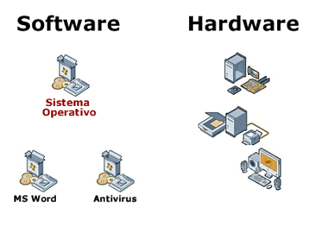

En el contexto de sistemas informáticos o de software, un componente es una unidad funcional o de ejecución independiente que forma parte de un sistema más grande. Los componentes suelen ser módulos de software que realizan tareas específicas y se pueden combinar con otros componentes para construir aplicaciones complejas.
Los componentes suelen ser reutilizables, lo que significa que pueden ser utilizados en diferentes sistemas o aplicaciones. Cada componente tiene una interfaz clara que define cómo se comunica con otros componentes. Esta separación de responsabilidades facilita la modularidad y la mantenibilidad de los sistemas, ya que cada componente puede ser desarrollado, probado y actualizado de manera independiente.
Cuales Son Los Componentes De Un Sistema
En ingeniería de sistemas, los componentes de un sistema suelen incluir:1. Entradas: Datos, información o estímulos que ingresan al sistema.2. Procesamiento: La transformación y manipulación de las entradas para producir salidas.3. Salidas: Resultados, productos o información generada por el sistema.4. Retroalimentación: Información sobre el desempeño del sistema que se utiliza para ajustar o mejorar el proceso.5. Entorno: El contexto más amplio en el que opera el sistema, incluidos factores externos e interacciones con otros sistemas.6. Objetivos: Los resultados o metas que el sistema está diseñado para lograr.Estos componentes forman parte de los principios fundamentales de la teoría de sistemas y son cruciales para comprender y diseñar sistemas eficaces.
Como Identificar Un Subsistema
Para identificar los subsistemas dentro de un sistema, es importante entender que un sistema puede dividirse en partes más pequeñas que tienen funciones específicas pero que trabajan juntas para lograr un objetivo común. Cada una de estas partes más pequeñas se considera un subsistema.Para identificar los subsistemas en un sistema dado, se pueden seguir los siguientes pasos:1. Analiza el sistema completo: Comienza por comprender la estructura y el propósito general del sistema en su conjunto.2. Identifica las funciones principales: Determina las funciones principales que debe cumplir el sistema para lograr su objetivo.3. Divide el sistema en partes: Examina cómo esas funciones principales se pueden dividir en tareas más pequeñas y específicas.4. Asigna funciones a cada parte: A cada una de esas tareas más específicas se le asignará una función particular que contribuye al funcionamiento del sistema en su totalidad.5. Establece relaciones entre los subsistemas: Observa cómo interactúan entre sí los diferentes subsistemas para lograr el objetivo común del sistema completo.
Ejemplos Componenetes De Un Sistema
1. Sistema de Control de Tráfico:
- Semáforos
- Señales de tráfico
- Cámaras de seguridad
- Sensores de tráfico2. Sistema de Gestión de Hospital:
- Historias clínicas electrónicas
- Equipos médicos (monitores, respiradores, etc.)
- Personal médico y de enfermería
- Software de programación de citas
- Software de programación de citas3. Sistema de Seguridad Doméstica:
- Cámaras de vigilancia
- Sensores de movimiento
- Sistema de alarma
- Aplicación móvil de control remoto

Referencias
Aqui es donde sacamos la informacion recopilada en nuestra pagina